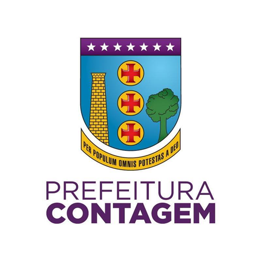

IT Support Technician - Prefeitura de Contagem
Mar 2024 - Present
Estagiário no setor de TI da Secretaria Municipal de Saúde de Contagem, atendendo dentro e fora dela (i.e, demandas tecnológicas externas em unidades básicas de saúde de Contagem). Suporte em software, hardware, além de manutenção e vistoria de rede, além disso estive envolvido com diversas ferramentas tais como: WinBox, pfSense, Zabbix, Active Directory (AD) e Fileserver.
Estágio no Laboratório de Informática, Telecomunicações e Eletrônica (LITE) da UFMG: Desenvolvimento de um dispositivo IoT com ESP32, protocolo MQTT e eletrônica analógica para automação na produção de defensivo agrícola.